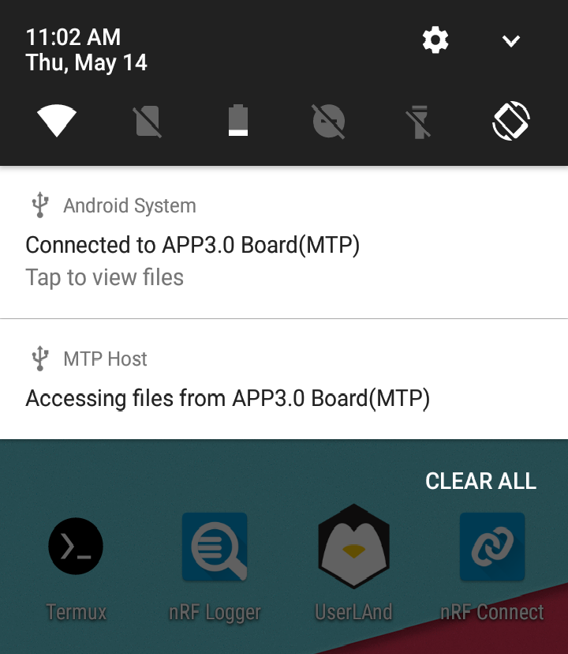

%%=============================================================================
% Universal template for LaTeX document in Bosch Corporate Design (English)
% for Bosch LaTeX Style v3.4
% Author: Stephan.Simon@de.bosch.com 2017-01-08
%%-----------------------------------------------------------------------------
% Copyright (c) 2001-2018 Robert Bosch GmbH and its subsidiaries.
% These LaTeX styles and templates and the accompanying materials are made
% available under the terms of the Bosch Internal Open Source License v4 which
% accompanies this distribution, and is available at
% http://bios.intranet.bosch.com/bioslv4.txt
%%=============================================================================
\usepackage{hyperref}
\usepackage[english]{babel} % for English text only
\usepackage[T1]{fontenc}
\usepackage[utf8]{inputenc}
\usepackage{microtype} % improves font spacing, needs pdfTEX >= 1.20
%\usepackage{tabu} % easy-to-use tables
%\usepackage[table,dvipsnames]{xcolor} % colored tables
%\usepackage{amsmath}
\PassOptionsToPackage{hyphens}{url}\usepackage{hyperref}
% Bosch style and its primary options, COMMA-SEPARATED, NO EMPTY LINES!
\usepackage[
Language = English,
Format = A4portrait,
isSerif = false,
BaseColor = Gray,
SgColor = Multi,
SgPlace = Top,
HeaderBg = Gray,
isShallowTitle = true,
TopWS = 0,
BottomWS = 1,
isLeftWS = false,
isRightWS = false,
EyeCatcherMode = Small,
NumOfHinDiag = 98,
SuperStripeHeightPercentOfH = 100,
HeadHeightPortrait = 2,
HeadHeightLandscape = 5,
HorzSpacePortrait = 4.5,
HorzSpaceLandscape = 1,
VertSpacePortrait = 1,
VertSpaceLandscape = 1.5,
isGrid = false,
]{bosch}
% Invoke the universal Bosch report pagestyle.
\pagestyle{boschrep}
%%-----------------------------------------------------------------------------
% Customization of bosch style.
% Any customization lines can be deleted if not needed!
% Leaving the arguments empty yields the same result except page numbering
% with \RBpage{} which is disabled by empty argument.
%%-----------------------------------------------------------------------------
% confidentiality class from -1 (no footer) to 3 (strictly confidential)
\RBconfidentiality{0}
\RBpage{Simple}% { | Simple | Last | LinkLast }
\newcommand{\BSTdocumentNumber}[1]{\def\@BSTdocumentNumber{#1}}
\newcommand{\@BSTdocumentNumber}{}
\newcommand{\BSTdocumentRevision}[1]{\def\@BSTdocumentRevision{#1}}
\newcommand{\@BSTdocumentRevision}{}
\newcommand{\BSTdocumentReleaseDate}[1]{\def\@BSTdocumentReleaseDate{#1}}
\newcommand{\@BSTdocumentReleaseDate}{}
\newcommand{\BSTtechnicalReferenceCodes}[1]{\def\@BSTtechnicalReferenceCodes{#1}}
\newcommand{\@BSTtechnicalReferenceCodes}{}
\newcommand{\BSTdocumentType}[1]{\def\@BSTdocumentType{#1}}
\newcommand{\@BSTdocumentType}{}
\RBdepartmentA{\@BSTdocumentNumber}
\RBversion{\@BSTdocumentRevision}
\RBnodate{}
\RBextraFooterField{\@BSTdocumentReleaseDate}
%%-----------------------------------------------------------------------------
% Other customization - taste-dependent ...
%%-----------------------------------------------------------------------------
% numbering depth for headings and table of contents
\setcounter{secnumdepth}{3}
\setcounter{tocdepth}{3}
% Formatting (see Klöckl, p.77)
\setcounter{topnumber}{5} % max num. of floats at head
\setcounter{bottomnumber}{5} % max num. of floats at foot
\setcounter{totalnumber}{10} % max num. of floats
\renewcommand{\topfraction}{1.0} % max. part of floats at head
\renewcommand{\bottomfraction}{1.0} % max. part of floats at foot
\renewcommand{\textfraction}{0.0} % min. part of text
\renewcommand{\dbltopfraction}{1.0} % for wide floats in twocolumn
\renewcommand{\floatpagefraction}{1.0} % must be filled before new floats page
\renewcommand{\dblfloatpagefraction}{1.0} % for wide floats in twocolumn
% Naming of figures
\addto\extrasenglish{\renewcommand{\figurename}{Fig.}}
\addto\extrasngerman{\renewcommand{\figurename}{Fig.}}
\newcommand{\Fig}{Fig.\xspace}
\newcommand{\Abb}{Abb.\xspace}
%%-----------------------------------------------------------------------------
% Your own shortcuts and commands
%%-----------------------------------------------------------------------------
% Trennregeln
\hyphenation{}
% Avoid that tables float around, add this: \begin{table}[H]
\usepackage{float}
\restylefloat{table}
%%-----------------------------------------------------------------------------
% Add support for Python syntax highlighting
%%-----------------------------------------------------------------------------
\usepackage{listings}
\usepackage{color}
\usepackage{graphicx}
\newcommand{\paragraphnl}[1]{\paragraph{#1}\mbox{}\\}
\lstset{frame=tb,
language=Python,
aboveskip=3mm,
belowskip=3mm,
showstringspaces=false,
columns=flexible,
basicstyle={\small\ttfamily},
numbers=none,
numberstyle=\tiny\color{BoschDarkGray100},
keywordstyle=\color{BoschDarkBlue100},
commentstyle=\color{BoschDarkGreen100},
stringstyle=\color{BoschFuchsia100},
breaklines=true,
breakatwhitespace=true,
tabsize=3
}
% Add syntax highlighting for C code
\lstset{
morekeywords={uint16\_t,int16\_t,uint8\_t,char,const,default,double,%
else,enum,extern,float,for,goto,if,int,long,register,return,%
short,signed,sizeof,static,struct,switch,typedef,union,unsigned,%
void,volatile,while}
}
%%-----------------------------------------------------------------------------
% \newcommand{\bstfirstpage}
%%-----------------------------------------------------------------------------
\newcommand{\bstfirstpage}{
\RBchangeOption{isShallowTitle}{false}
\RBchangeOption{NumOfHinDiag}{54}
\RBchangeOption{HeadHeightPortrait}{4}
%\RBchangeOption{SgColor}{LightGray}
\RBchangeOption{HeaderBg}{Empty}
\RBmyBackPic{Bosch-SupergraphicUp-Gray-Medium}
%\RBmyBackPicZoomAngleRelxRely{}{}{}{.5}{.958}
\vspace*{450px}
\renewcommand{\arraystretch}{1.5} % Space between rows
\begin{center}
\begin{tabular}{l p{12cm}}
\multicolumn{2}{l}{\textbf{\Large \@BSTdocumentType}} \\
Document revision & \@BSTdocumentRevision \\
Document release date & \@BSTdocumentReleaseDate \\
Document number & \@BSTdocumentNumber \\
Technical reference code(s) & \@BSTtechnicalReferenceCodes \\
Notes & Data and descriptions in this document are subject to change without notice. Product photos and pictures are for illustration purposes only and may differ from the real product appearance. \\
\end{tabular}
\end{center}
\newpage
\RBmyBackPic{}
\RBchangeOption{isShallowTitle}{true}
\RBchangeOption{NumOfHinDiag}{98}
\RBchangeOption{HeadHeightPortrait}{2}
\setlength{\unitlength}{1pt}
}
%%-----------------------------------------------------------------------------
% \newcommand{\bstlastpage}
%%-----------------------------------------------------------------------------
\newcommand{\bstlastpage}{
\newpage
\thispagestyle{empty}
\setlength{\headheight}{0pt}
\setlength{\headsep}{0pt}
\setlength{\topmargin}{0pt}
\setlength{\evensidemargin}{0pt}
\setlength{\oddsidemargin}{0pt}
\begin{center}
\makebox[\textwidth]{\includegraphics[width=\paperwidth, trim={0 25cm 0 0}, clip]{Bosch-SupergraphicUp-Gray-Medium}}
\end{center}
Bosch Sensortec GmbH \\
Gerhard-Kindler-Straße 9 \\
72770 Reutlingen / Germany
www.bosch-sensortec.com
Modifications reserved | Printed in Germany \\
Preliminary - specifications subject to change without notice \\
Document number: \@BSTdocumentNumber \\
Revision \@BSTdocumentRevision
}
Document revision
Document release date
Document number
Technical reference code(s)
Notes
Data and descriptions in this document are subject to change without notice. Product photos and pictures are for illustration purposes only and may differ from the real product appearance.
Application Board 2.0
Application Board 3.0 and Application Board 3.1
Bluetooth Low Energy
Communication with Inertial and Environmental Sensors
Device Firmware Upgrade
Data Terminal Ready
Microcontroller Unit
Micro-Electro-Mechanical Systems
Software Development Kit
Universal Serial Bus
Introduction
Bosch Sensortec offers a toolkit for evaluation of it’s sensor products.The toolkit consists of 3 elements:
Engineering board: Application Board named APP2.0 and APP3.x in this document, serves as interface translator from the sensor interface (I2C or SPI) to a USB interface, allowing PC software to communicate with the sensor on the shuttle board. Nicla Sense ME board combines four state-of-the-art sensors from Bosch Sensortec (BHI260AP, BMP390, BMM150 and BME688) in the Arduino ecosystem.
Sensor Shuttle board: A sensor specific shuttle board also known as breakout board is a PCB with the sensor mounted on it. The shuttle board allows easy access to the sensor pins via a simple socket and can be directly plugged into the Bosch Sensortec’s Application boards. APP3.x shuttle boards also known as mini shuttle boards has smaller form factor when compared with APP2.0 shuttle board.
COINES: COINES provides a low-level interface for communication with Bosch Sensortec’s Engineering boards enabling access to their MEMS sensors through sample applications and SensorAPI. For detailed description, refer to sections below.
Introduction to COINES
COINES ("COmmunication with INertial and Environmental Sensors") is an SDK (Software Development Kit), implemented in C as a programming language that provides a low-level interface to Bosch Sensortec’s Engineering Boards. The user can access Bosch Sensortec’s MEMS sensors through this C interface. COINES can be used with the SensorAPI of the sensor which is available at https://github.com/BoschSensortec. The user can modify, compile and run the sample applications in COINES SDK and SensorAPI.
The full working environment consists of:
A Bosch Sensortec MEMS sensor on a shuttle board mounted on the socket of Bosch Sensortec’s Application board APP2.0/APP3.x
Windows, Linux or Mac PC to which the Engineering Board is connected via USB or BLE.
C compiler is also required (for details, see sections below)
COINES usage
The following diagram represents COINES usage.
COINES usage with APP3.1
Installation
COINES should be usable on any recent PC or laptop system which has at least a performance as an “office PC”. The hardware should provide a USB interface.
COINES runs on recent versions of Windows, Linux and Mac Operating systems.
Installation (Windows)
System requirements
The supported OS versions are Windows 10 and 11.
Installation of COINES
The steps below need to be followed in order to install COINES SDK:
Accept the End User License Agreement and click Next
Windows installer end user agreement dialog
Click Install to start Installation
Windows install dialog
Installation of compiler environment
COINES examples can be built using GNU C compiler (GCC). There are various distributions of GCC. TDM-GCC is easy to install and hence preferred for COINES. TDM GCC is based on MinGW GCC.
If you have already installed GCC (MinGW/Cygwin/MSYS2 GCC) and added to ’PATH’ environmental variable, you can skip compiler installation.
The steps to install compiler environment are as follows:
Download the TDM32/TDM64 bundle (link). Use TDM32 bundle if your Windows OS is 32-bit and TDM64 bundle if 64-bit.
Start the Installer. Ensure that the option Check for updated files on the TDM GCC server is unchecked. Click Create and proceed with the installation
If you intend to do run the COINES example on Application Board’s microcontroller, install the latest version of GNU Embedded Toolchain for ARM for Windows. Make sure you have checked ’Add to PATH’.
TDM-GCC installation dialogGNU ARM Toolchain installation
Installation (Linux/MacOS)
System requirements
The supported Linux OS versions are Debian based - Ubuntu 18.04 and 22.04.
The supported macOS versions are MacOS Ventura 13.4.1 and 13.5.2.
Installation of COINES
The steps below need to be followed in order to install COINES SDK:
Download the installer.
Use the command cd to go to the directory where the installer is located and make the installer executable:
chmod +x coines_vX.Y.sh
Ensure that you are connected to the Internet before running the installer, which is executed like this:
./coines_vX.Y.sh
Accept the End User License agreement
Linux installer end user agreement
The installer will prompt you if the required dependencies/packages are not installed. (This step requires root privileges.)
Installation of compiler environment
On a Debian or Redhat based Linux distro, the installer prompts for installation of missing dependencies, gcc, make and libusb-dev packages.If due to some reason installation fails, the user can manually install the dependencies.
Debian based distros - gcc, make, libusb-1.0-0-dev, dfu-util , libdbus-1-dev
Redhat based distros - gcc, make, libusbx-devel, dfu-util, dbus-devel
MacOS - libusb, dfu-util
If you intend to run the COINES example on Application Board’s microcontroller, download the latest version of GNU Embedded Toolchain for ARM for Linux and extract the package. Add the compiler to PATH variable by editing $HOME/.bashrc or similar file like /etc/profile or /etc/environment.
Using COINES to access the sensor on Engineering Board
Running examples on the MCU of the Application board
Working principle
The COINES SDK can be cross-compiled on PC side and downloaded into the memory of the Application board and executed there. The user can choose to download the created binary into the flash memory or into the RAM (if the binary is within the RAM memory capacity e.g., APP3.x’s RAM is 256 KB).
Downloading COINES SDK example to APP3.x Flash memory will overwrite default firmware. To update the firmware again, refer to section 13.
In this configuration, the COINES layer provides a simple abstraction on top of the MCU BSP (i.e. board level support layer of the microcontroller). Any printf command will now not output to the console, but rather to the USB connection, which appears as virtual COM port on PC side.
This mode facilitates the execution of many time-critical operations on the sensor, such as fast reading of FIFO content at high data rates.
Working principle: Running example on the MCU of the Application board
Getting started
To get started with example execution, follow these steps:
Connect the Application board via USB, with the sensor shuttle board mounted.
Open the command prompt or the terminal.
Use the command cd to go to the directory where the example that is to be built is located.
Interfacing via BLE
The procedure to interface via BLE involves these steps:
Open the script to be executed (in case of SensorAPI - common.c file in the selected example folder) in your IDE
Change COINES_COMM_INTF_USB to COINES_COMM_INTF_BLE
Change all print statments
printf(...) to fprintf(bt_w,...)
Now follow the steps from 1 - 4 in the above section
Cross compiling
To compile and download an example to Engineering Board’s microcontroller, type any of the build commands below based on available Engineering board type and target memory location. Use ’mingw32-make’ (TDM-GCC/MinGW) or ’make’ (Linux/Cygwin/MSYS2/MacOS) for compilation.
Note: Nicla board programs can only be executed as PC target at this moment.
Viewing the results
The ways to view the execution results are outlined as follows:
Note: The binary on the MCU will be executed once the serial port is opened. The port must be opened including DTR signal set, otherwise the binary will not be executed. Some terminal programs such as HTerm allow explicit setting of the DTR signal.
For bluetooth communication, connect the Application board to another power source and keep it within the BLE range. And use any of the below tools to view the output.
The user can use any serial terminal program to access and store the data provided via virtual COM port e.g HTerm has "Save output" option to store log.
Running examples on PC side
Working principle
When compiling the COINES SDK for PC side, the COINES layer provides an abstraction of the embedded environment on the host side. COINES library provides read and write functions for I2C and SPI on PC side. These functions receive the arguments of the user input (i.e. what register address to read from) and tunnel them through the USB connection to the Application Board, where they are fed into the embedded I2C and SPI functions and are executed to access the sensor. Any result or response from those functions is tunneled back to the PC side and provided to the example application.
This approach allows easy and flexible programming and offers the possibility to integrate the example code into other applications or add advanced logging options. The drawback is that in this mode the code is not executed in real time, as it runs on a multi-tasking operating system. To overcome this drawback, the examples can also be run on the MCU side (see section 5.1).
Working principle: Running example on PC side
PC side implementation
This setup has the challenge of lacking the real-time capabilities known from a pure microcontroller environment. To overcome this, the coinesAPI offers streaming functions, which allow the user to schedule data readout directly on the microcontroller, either based on a data interrupt coming from the sensors or based on the timer of the microcontroller. The scheduler waits for the configured interrupt (sensor interrupt or timer interrupt) and reads out areas of the register map, which can be configured by the user.
As an example, the user could choose to read out the 6 bytes from the register map of a certain inertial sensor, containing the sensor data of three axis (2 bytes per axis). If the user would configure e.g a readout once per milliseconds, the result would be a data stream of three-axis sensor data at a rate of 1 kHz.
Getting started
To get started with example execution, follow these steps:
Connect the Application board via USB, with the sensor shuttle board mounted.
Refer to section 13 and update the Coines Bridge firmware to the board.
Open the command prompt or the terminal.
Use the command cd to go to the directory where the example that is to be built is located.
Note: Some examples may not compile for both PC and MCU target. Please refer to the example documentation or simply the example name (e.g. examples that can only be compiled for the PC are named with a following ’_pc’).
Interfacing via BLE
The procedure to interface via BLE involves these steps:
Open the script to be executed (in case of SensorAPI - common.c file in the selected example folder) in your IDE
Change COINES_COMM_INTF_USB to COINES_COMM_INTF_BLE
Now follow the steps from 1 - 4 in the above section
Compiling
To run an example in PC side, execute below command "mingw32-make TARGET=PC". Use ’mingw32-make’ (TDM-GCC/MinGW) or ’make’ (Linux/Cygwin/MSYS2/MacOS) for compilation.
Viewing the results
Running the output executable in the command prompt of the PC will display the results. To view ouput via BLE, connect the Application board to another power source and keep it within the BLE range and run the executable in the PC.
Data logging
The user can utilize the terminal’s output redirection command to store the result of a command/executable in a file, as demonstrated below.
Project Cleanup
The commands to clean build files are listed below:
mingw32-make clean - Use this command to remove the object files and other intermediate files created during the compilation process.
mingw32-make clean-all - Use this command to remove all build artifacts, including the final executable or library, and start the build process from scratch
Using COINESPY to access the sensor on Engineering Board
Introduction to COINESPY library
The COINESPY library provides a Python interface for interacting with the Bosch Sensortec’s Engineering Boards. The library offers the following range of functionalities:
Control VDD and VDDIO of sensor
Configure SPI and I2C bus parameters
Read and write into registers of sensors from Bosch Sensortec via SPI and I2C
Read and write digital pins of the Application Board
Installation
The COINESPY module can be installed using pip:
pip install coinespy
The module can be found on https://pypi.org/project/coinespy/. It is highly recommended to test the following script examples\python\coinespy_test.py in the COINES installation or Refer to 8.2.1 to check if the installation was successful.
Using Sensor API with COINES
SensorAPI
Bosch Sensortec recommends using the SensorAPI in order to communicate with the sensors. The SensorAPI, an abstraction layer written in C makes it much more convenient for the user to access the register map of the sensor, in order to configure certain functionality and obtain certain information from it.
For making use of the SensorAPI, some function pointers must be set to the appropriate read/write functions of the selected bus on the system (either I2C or SPI), as well as one function pointer to a system’s function causing delays in milliseconds.
In order to execute C code using SensorAPI, the COINES API provides the mentioned read, write, delay functions. These functions are wrapper functions, embedding the actual SensorAPI payloads into a transport package, sending this via USB or BLE to the Engineering board, where the payload is translated into corresponding SPI or I2C messages and sent to the sensor on the shuttle board.The mapping would look similar to the one below.
This basic program shows how to configure and perform I2C read. Sensor: BMI270
#include <stdio.h>#include <stdlib.h>#include "coines.h"#define BMI2_I2C_PRIM_ADDR 0x68int main(void) {int8_t error_code;uint8_t chip_id;uint8_t reg_addr = 0x0;enum coines_comm_intf comm_intf = COINES_COMM_INTF_USB; error_code = coines_open_comm_intf(comm_intf, NULL);if (error_code == COINES_SUCCESS) { printf("\nSuccessfully connected to board!\n"); }else { printf("\nUnable to connect with board!\n"); exit(error_code); }/* Power up the board */ (void)coines_set_shuttleboard_vdd_vddio_config(3300, 3300); coines_delay_usec(200);/* SDO to Ground */ coines_set_pin_config(COINES_SHUTTLE_PIN_22, COINES_PIN_DIRECTION_OUT, COINES_PIN_VALUE_LOW);/* Make CSB pin HIGH */ coines_set_pin_config(COINES_SHUTTLE_PIN_21, COINES_PIN_DIRECTION_OUT, COINES_PIN_VALUE_HIGH); coines_delay_msec(100);/* SDO pin is made low */ coines_set_pin_config(COINES_SHUTTLE_PIN_SDO, COINES_PIN_DIRECTION_OUT, COINES_PIN_VALUE_LOW);/* I2C config */ coines_config_i2c_bus(COINES_I2C_BUS_0, COINES_I2C_STANDARD_MODE);/* I2C read */ (void)coines_read_i2c(COINES_I2C_BUS_0, BMI2_I2C_PRIM_ADDR, reg_addr, &chip_id, 1); printf("I2C read: Sensor chip ID - 0x%x\n", chip_id); (void)coines_set_shuttleboard_vdd_vddio_config(0, 0); coines_delay_msec(100);/* Coines interface reset */ coines_soft_reset(); coines_delay_msec(100); coines_close_comm_intf(comm_intf, NULL);return0; }
The user shall pass GPIO pin numbers, read register address and I2C device address for sensors based on the selected sensor shuttle board. I2C communication require the proper setting of VDD and VDDIO using coines_set_shuttleboard_vdd_vddio_config. The APIs below can be used for I2C configure/read/write.
coines_config_i2c_bus
coines_read_i2c
coines_write_i2c
SPI config and read
This basic program shows how to configure and perform SPI read. Sensor: BMI270
#include <stdio.h>#include <stdlib.h>#include "coines.h"#define BMI2_SPI_RD_MASK 0x80int main(void) {int8_t error_code;uint8_t chip_id[2], dummy_byte;/* An extra dummy byte is read during SPI read */uint8_t dummy_byte_len = 1;uint8_t reg_addr = 0x0;enum coines_comm_intf comm_intf = COINES_COMM_INTF_USB; error_code = coines_open_comm_intf(comm_intf, NULL);if (error_code == COINES_SUCCESS) { printf("\nSuccessfully connected to board!\n"); }else { printf("\nUnable to connect with board!\n"); exit(error_code); }/* Power up the board */ coines_set_shuttleboard_vdd_vddio_config(3300, 3300); coines_delay_msec(200);/* SPI config */ (void)coines_config_spi_bus(COINES_SPI_BUS_0, COINES_SPI_SPEED_5_MHZ, COINES_SPI_MODE3);/* Pin config */ coines_set_pin_config(COINES_SHUTTLE_PIN_21, COINES_PIN_DIRECTION_OUT, COINES_PIN_VALUE_HIGH);/* Mask read register address for SPI */ reg_addr = (reg_addr | BMI2_SPI_RD_MASK);/* Dummy read for SPI init*/ (void)coines_read_spi(COINES_SPI_BUS_0, COINES_MINI_SHUTTLE_PIN_2_1, reg_addr, &dummy_byte, 1); coines_delay_usec(450);/* SPI read */ (void)coines_read_spi(COINES_SPI_BUS_0, COINES_MINI_SHUTTLE_PIN_2_1, reg_addr, chip_id, 1 + dummy_byte_len); coines_delay_usec(450); printf("SPI read: Sensor chip ID - 0x%x\n", chip_id[dummy_byte_len]); (void)coines_set_shuttleboard_vdd_vddio_config(0, 0); coines_delay_msec(100);/* Coines interface reset */ coines_soft_reset(); coines_delay_msec(100); coines_close_comm_intf(comm_intf, NULL);return0; }
The user shall pass GPIO pin numbers, read register address and SPI CS pins for sensors based on the selected sensor shuttle board. SPI communication require the proper setting of VDD and VDDIO using coines_set_shuttleboard_vdd_vddio_config. The APIs below can be used for SPI configure/read/write.
coines_config_spi_bus
coines_read_spi
coines_write_spi
Led and button control
The example program below is to control LEDs and buttons on the board. Target: MCU
This example shows how to configure BLE connection. Target: PC
#include <stdio.h>#include <string.h>#include <stdlib.h>#include "coines.h"/*! Macros to hold the BLE peripheral name and address to be connected *//*! Please change the name and address with BLE name of the Application board under test */#define BLE_NAME "APP Board 3.0(B6-E5)"#define BLE_ADDR "dd:fc:ab:af:b6:e5"/*! Variable to hold the communication interface type */constenum coines_comm_intf comm_intf = COINES_COMM_INTF_BLE;int main(void) {struct ble_peripheral_info ble_config = { BLE_ADDR, "" };struct ble_peripheral_info ble_info[40];uint8_t peripheral_count, i;int8_t result;/* Get the BLE peripheral list */ result = coines_scan_ble_devices(ble_info, &peripheral_count, 7000);if (result != COINES_SUCCESS) {constchar *err_str = get_coines_error_str(result); printf("\n%s", err_str); exit(result); }/* Print the BLE peripheral list */ printf("\nBLE devices found:");for (i = 0; i < peripheral_count; i++) { printf("\n[%d] %s [%s]", i, ble_info[i].ble_identifier, ble_info[i].ble_address); }/* Open BLE connection */ result = coines_open_comm_intf(comm_intf, &ble_config);if (result == COINES_SUCCESS) { printf("\nSuccessfully connected to board!\n"); }else { printf("\nUnable to connect with board!\n"); exit(result); }/* Close BLE connection */ coines_soft_reset(); coines_delay_msec(100); coines_close_comm_intf(comm_intf, NULL);return0; }
The user shall modify BLE settings like address and name before executing this example.
Configure Serial communication
This example shows how to configure Serial COM connection. Target: PC
#include <stdio.h>#include <string.h>#include <stdlib.h>#include "coines.h"#define ROBERT_BOSCH_USB_VID (0x108C)#define ARDUINO_USB_VID (0x2341)#define BST_APP30_CDC_USB_PID (0xAB3C)#define BST_APP20_CDC_USB_PID (0xAB2C)#define ARDUINO_NICLA_USB_PID (0x0060)/*! Variable to hold the communication interface type */constenum coines_comm_intf comm_intf = COINES_COMM_INTF_USB;int main(void) {int16_t result;struct coines_serial_com_config scom_config; scom_config.baud_rate = 38400; scom_config.vendor_id = ROBERT_BOSCH_USB_VID; scom_config.product_id = BST_APP30_CDC_USB_PID; scom_config.com_port_name = "COM4"; scom_config.rx_buffer_size = 2048;/* Open serial connection */ result = coines_open_comm_intf(comm_intf, &scom_config);if (result == COINES_SUCCESS) { printf("\nSuccessfully connected to board!\n"); }else { printf("\nUnable to connect with board!\n"); exit(result); }/* Close serial connection */ coines_soft_reset(); coines_delay_msec(100); coines_close_comm_intf(comm_intf, NULL);return0; }
The user shall modify Serial COM settings like vendor ID, product ID and COM port name before executing this example.
COINES Python examples
Getting board info
The following code snippet shows how to get board information.
import coinespy as cpyfrom coinespy import ErrorCodes COM_INTF = cpy.CommInterface.USBif__name__=="__main__": board = cpy.CoinesBoard()print('coinespy version - %s'% cpy.__version__) board.open_comm_interface(COM_INTF)if board.error_code != ErrorCodes.COINES_SUCCESS:print(f'Could not connect to board: {board.error_code}')else: b_info = board.get_board_info()print(f"coines lib version: {board.lib_version}")print(f'BoardInfo: HW/SW ID: {hex(b_info.HardwareId)}/{hex(b_info.SoftwareId)}') board.close_comm_interface()
I2C config and read
This basic program shows how to configure and perform I2C read. Sensor: BMI085
The user shall pass GPIO pin numbers, read register address and I2C device address for sensors based on the selected sensor shuttle board. I2C communication require the proper setting of VDD and VDDIO using set_shuttleboard_vdd_vddio_config.
SPI config and read
This basic program shows how to configure and perform SPI read. Sensor: BMI085
The user shall pass GPIO pin numbers, read register address and SPI CS pins for sensors based on the selected sensor shuttle board. SPI communication require the proper setting of VDD and VDDIO using set_shuttleboard_vdd_vddio_config.
Debugging via VS code
Here are the steps to follow to debug programs via VS code:
Download the NRF5 .svd file from Nordic Semiconductor github.
Connect J-link to SWD debugger connector.
APP3.1 Debugger connector
Below is the sample launch.json config for VS code debug.
VS code debug launch.json
Media Transfer Protocol (MTP) firmware for APP3.x
The external memory chip W25M02/W25N02 on APP3.x is based on NAND flash.
FAT filesystem on NAND flash memory results in a complicated solution which uses of lot of RAM. Moreover use of FAT without Flash Translation Layer (to save RAM) wears out NAND flash with frequent usage. Hence the choice of FlogFS, a filesystem optimized for use with NAND flash.
But the use of ‘FlogFS‘, presents a new problem ’Filesystem access from PC via USB’. Use of ‘FlogFS‘ with USB Mass Storage protocol is not possible because operating system can’t recognize ‘FlogFS‘ as a valid filesystem.
Use of custom protocol to do filesystem operations would mean re-inventing the wheel and a lot of effort. User also would not have the same experience as with USB Mass Storage.
Solution was to go with the "Media Transfer Protocol" developed initially by Microsoft for Portable Devices like MP3 players. Starting from Android Kitkat (v4.4), MTP is the only way to access files on an Android device since the whole flash memory (included user storage space) uses filesystems like ext4, YAFFS, F2FS, etc.,
Files in APP3.x’s NAND flash memory can be viewed using the USB MTP firmware.
Supported on Windows, Linux, macOS and Android (via USB OTG).
APP3.x in MTP mode on WindowsAPP3.x in MTP mode on Linux
APP3.x in MTP mode on AndriodFiles in external memory listed on Andriod device
Copying the files using MTP
The following procedure demonstrates how to copy files using MTP:
APP3.x comes with the preloaded MTP firmware update package.
It is to be noted that the same feature can also be used to perform application switch ( 2 or more applications can reside in the same flash memory at different address locations ). Just write the application start address to APP_START_ADDR instead of bootloader address
Using the Bootloader via USB
The commands below demonstrate how to use dfu-util for different scenarios:
Path to dfu-util:
Write firmware to Flash memory using following command
dfu-util -a FLASH -D <firmware>.bin -R
Write firmware to RAM memory using following command
dfu-util -a RAM -D <firmware>.bin -R
Read firmware from Flash memory using following command
dfu-util -a FLASH -U <firmware>.bin
Read firmware from RAM memory using following command
dfu-util -a RAM -U <firmware>.bin
Read device serial number/ BLE MAC address
dfu-util -l
Note: Not applicable for Nicla Sense ME board
Using the Bootloader via BLE
To update the bootloader firmware via BLE, proceed as follows:
PC (Windows, Linux or macOS) Python script present in following path can use the binary file directly.
The process for switching modes for the Application board involves these steps:
Bootloader mode - Turn OFF and ON the board with T2 pressed, blue LED glows indicating that the board switched to bootloader mode.
MTP mode - Turn OFF and ON the board with T1 pressed, green LED glows indicating that the board switched to MTP mode.
Nicla Sense ME board
The process for switching modes for the Nicla Sense ME board involves these steps:
Bootloader mode - Press three times reset button, blue LED glows indicating that the board switched to bootloader mode.
Application Mode - Press three times reset button to switch to application mode
Updating Bootloader and MTP firmware using COINES
To update the firmware, follow these steps:
FAQs
What to do in case of any communication or initialization failure while running examples? Resetting or rebooting the board will help solving such issues.
Why is there no output in my terminal application after cross-compiling and downloading an example on the MCU? The code example on the MCU waits until the serial port of the board is opened. However, opening the port is not enough, the user has to ensure that also the DTR signal is set (this is required due to have higher compatibiliy among different terminal applications).
How to fix libusb not found issue on macOS (arm64)?
Please try the below steps to fix the issue.
Install libusb: Libusb will be automatically installed as part of the COINES installation. However, If it’s not installed automatically, you can use Homebrew to install it. brew install libusb After running above command, libusb should be installed on your system. On Intel Mac: On M1 Mac:
Add the path in
COINES file structure
How do I recover the original program when bootloader was erased accidentally on Application Board 3.x? COINES SDK does not provide a way to restore the board to original state.
How to run multiple application boards using COINES in a single computer? When multiple USB devices are connected to a PC, by configuring Serial COM settings for a script, one can communicate with them separately. Please refer to 8.1.10 for implementation.
The APP2.0 shuttle board has total of 28 pins, of which some have a predefined functionality and some can be used as GPIO by the user.
The shuttle board connector details are given in the table below.
Overview of shuttle board pins and their function
Pin number on
Name /
Pin number on
Name /
shuttle board
function
shuttle board
function
1
VDD (3.3V)
28
SHTLE_COD #4
2
VDDIO (3.3V)
27
SHTLE_COD #3
3
GND
26
SHTLE_COD #2
4
SPI MISO
25
SHTLE_COD #1
5
SPI: MOSI / I2C: SDA
24
SHTLE_COD #0
6
SPI: SCK / I2C: SCL
23
SHTLE_COD_GND
7
SPI: CS
22
IO_4 ( GPIO #4 )
8
IO_5 ( GPIO #5 )
21
IO_7 ( GPIO #7 )
9
IO_0 ( GPIO #0 )
20
IO_6 ( GPIO #6 )
10
SHTLE_COD #5
19
IO_8 ( GPIO #8 )
11
SHTLE_COD #6
18
SCL (see note)
12
SHTLE_COD #7
17
SDA (see note)
13
SHTLE_COD #8
16
IO_3 ( GPIO #3 )
14
IO_1 ( GPIO #1 )
15
IO_2 ( GPIO #2 )
Note:
In COINES functions, the pins are addressed using the same numbers as on the shuttle board. For example, the GPIO #5 has the pin number 8.
In some cases (depending on the sensor), the I2C lines are shuttle board pin 6 for the clock signal SCL and shuttle board pin 5 for the data line SDA. In such cases pins 17 and 18 may not be connected. Please carefully read the shuttle board documentation.
GPIO mapping of APP3.x shuttle board pins
The APP3.x shuttle board has a total of 16 pins, 7 on the left and 9 on the right. (with shuttle board pins facing downwards)
Note:
In COINES functions, the pins are addressed as on the APP3.x shuttle board. For example, the GPIO #5 is addressed as COINES_MINI_SHUTTLE_PIN_2_6.
Supported VDD voltages on APP3.x are 0, 1.8V and 2.8V.
Supported VDDIO voltage on APP3.x is 1.8V.
Overview of APP3.x shuttle board pins and their function
Pin number on
Name /
Pin number on
Name /
shuttle board
function
shuttle board
function
1_1
VDD (1.8/2.8V)
2_1
SPI_CS
1_2
VDDIO (1.8)
2_2
SPI: SCK / I2C: SCL
1_3
GND
2_3
SPI: MISO
1_4
GPIO0
2_4
SPI: MOSI / I2C: SDA
1_5
GPIO1
2_5
GPIO4*
1_6
GPIO2
2_6
GPIO5*
1_7
GPIO3
2_7
IOXP_INT*
2_8
PlugDet*
2_9
EEPROM_RW
*SPI pins for secondary interface - CS:GPIO4, SCK:GPIO5, MISO:IOXP_INT, MOSI:PlugDet
In case of MCU Target, API waits indefinitely for serial port or BLE connection (MCU_APP30 target and MCU_APP31 target).
In case of PC Target, one can configure communication settings either by passing the address of coines_serial_com_config or ble_peripheral_info to *arg.
Serial com configuration: If *arg is NULL for COINES_COMM_INTF_USB, first com port enumerated will be used for communication. The serial com configuration structure contains the following items. Refer to 8.1.10 for its implementation.
struct coines_serial_com_config
{
uint32_t baud_rate; /*< Baud rate */
uint16_t vendor_id; /*< vendor Id */
uint16_t product_id; /*< Product Id */
char* com_port_name; /*< serial com port name */
uint16_t rx_buffer_size; /*< RX response buffer size */
};
BLE com configuration: If *arg is NULL for COINES_COMM_INTF_BLE, the nearest Application board for the host BLE will be used for communication. The ble com configuration structure contains the following items. Refer to 8.1.9 for its implementation.
struct ble_peripheral_info
{
char ble_address[COINES_CHAR_MAX_LEN]; /*< BLE device address */
char ble_identifier[COINES_CHAR_MAX_LEN]; /*< BLE device identifier */
};
struct coines_board_info {
/*!Board hardware ID */
uint16_t hardware_id;
/*!Board software ID */
uint16_t software_id;
/*!Type of the board like APP2.0, Arduino Due*/
uint8_t board;
/*!Shuttle ID of the sensor connected*/
uint16_t shuttle_id;
};
Configures the SPI bus of the board. The argument coines_spi_bus refers to the bus on the board. On APP2.0, there is only one bus available, so the user should only use COINES_SPI_BUS_0. The SPI speed can be chosen in various discrete steps, as defined in enum coines_spi_speed in coines.h. (For example, COINES_SPI_SPEED_2_MHZ sets the SPI speed to 2 MHz.)
channel_id: An integer number that can be used as identifier/index to the sensor data that will be streamed for this setting
stream_config: Contains information regarding interface settings and streaming configuration.
coines_streaming_blocks: Contains information regarding numbers of blocks to read, register address and size for each block.
Note: The below parameters should always be set:
data_block.no_of_blocks: number of blocks to stream (must at least be one)
For each block b:
data_block.reg_start_addr[b]: start address of the block in the register map
stream_block.no_of_data_bytes[b]: number of bytes to read, starting from the start address
For reading data from I2C bus,then set the below parameters:
stream_config.intf = COINES_SENSOR_INTF_I2C;
stream_config.i2c_bus: I2C bus (in case of APP2.0, this is always COINES_I2C_BUS_0)
stream_config.dev_addr: I2C address of the sensor
For reading data from SPI bus, then set the below parameters:
stream_config.intf = COINES_SENSOR_INTF_SPI;
stream_config.spi_bus: SPI bus (in case of APP2.0, this is always COINES_SPI_BUS_0)
stream_config.cs_pin: CS pin of the sensor, information can be obtained from the shuttle board documentation for the sensor.
When polling mode is requested, set the below parameters:
stream_config.sampling_units:
either milliseconds (COINES_SAMPLING_TIME_IN_MILLI_SEC)
or microseconds (COINES_SAMPLING_TIME_IN_MICRO_SEC)
stream_config.sampling_time: sampling period in the unit as defined in stream_config.sampling_units
When interrupt mode is requested, set the below parameters:
stream_config.int_pin: pin of the interrupt which shall trigger the sensor read-out. If the interrupt output of the sensor is used, the required information about the pin number can be obtained from the shuttle board documentation for the sensor.
stream_config.int_timestamp: it can be configured if the sensor data is tagged with a timestamp (COINES_TIMESTAMP_ENABLE) or not (COINES_TIMESTAMP_DISABLE).
ble_info: array of struct containing found BLE peripheral information
peripheral_count: number of BLE peripherals found
scan_timeout_ms: timeout for BLE scan
COINES Python functions
As coinespy is only a wrapper on top of coinesAPI, the following API documentation is limited to the wrapper only. Details about meaning of variables and functionality can be found in the corresponding coinesAPI documentation in the chapter above. The following function calls are defined within the class CoinesBoard. Thus in order to access the functions, the user has to create an object of that class first.
import coinespy as cpy coinesboard = cpy.CoinesBoard()
coinespy API calls: Interface and board information
open_comm_interface
Sets the communication interface between board and PC to USB, Serial or BLE.
BoardInfo = coinesboard.get_board_info()# Return:BoardInfo.HardwareId # Hardware IDBoardInfo.SoftwareId # Firmware version informationBoardInfo.Board # Board typeBoardInfo.ShuttleID # ID of shuttle, in case a shuttle is detected
scan_ble_devices
This API is used to connect to BLE Adapter and return list of BLE peripherals found during BLE scan.
For the definition of MultiIOPin, refer to 15.3.6.8. For the definition of SPISpeed, refer to 15.3.6.5. For the definition of SPIMode, refer to 15.3.6.7.
When polling mode is requested, set the below parameters:
stream_config.SamplingUnits: either milliseconds or microseconds. Refer to 15.3.6.15.
stream_config.SamplingTime: sampling period in the unit as defined in stream_config.SamplingUnits
When interrupt mode is requested, set the below parameters:
stream_config.IntPin: pin of the interrupt which shall trigger the sensor read-out. If the interrupt output of the sensor is used, the required information about the pin number can be obtained from the shuttle board documentation for the sensor.
stream_config.IntTimeStamp: it can be configured if the sensor data is tagged with a timestamp - 1 or not - 0.
stream_config.HwPinState: State of the hardware pin connected to the interrupt line - 0/1 : Low/high
Below parameters are common for both streaming types:
stream_config.IntlineCount: Number of interrupt lines to be used for monitoring interrupts.
stream_config.IntlineInfo: List of pin numbers that correspond to interrupt lines being used for interrupt monitoring.
stream_config.ClearOnWrite: 0/1 : Disable/enable "clear on write" feature
The below parameters should be set only when stream_config.ClearOnWrite = 1:
stream_config.ClearOnWriteConfig.StartAddress: Address of the sensor register at which the process of clearOnWrite should initiate.
stream_config.ClearOnWriteConfig.DummyByte: Number of padding bytes that must be added before clearing the bytes starting from the designated address.
stream_config.ClearOnWriteConfig.NumBytesToClear: Number of bytes that need to be cleared.
Below is the Python code snippet for interrupt streaming
# Store streaming settings in local variablesaccel_stream_settings =dict( I2C_ADDR_PRIMARY=0x18, NO_OF_BLOCKS =2, REG_X_LSB= [0x12, 0x00], NO_OF_DATA_BYTES= [6, 1], CHANNEL_ID=1, CS_PIN=cpy.MultiIOPin.SHUTTLE_PIN_8.value, INT_PIN=cpy.MultiIOPin.SHUTTLE_PIN_21.value, INT_TIME_STAMP=1,)gyro_stream_settings =dict( I2C_ADDR_PRIMARY=0x68, NO_OF_BLOCKS =2, REG_X_LSB= [0x02,0x00], NO_OF_DATA_BYTES = [6, 1], CHANNEL_ID=2, CS_PIN=cpy.MultiIOPin.SHUTTLE_PIN_14.value, INT_PIN=cpy.MultiIOPin.SHUTTLE_PIN_22.value, INT_TIME_STAMP=1,)# set the config_streaming parametersstream_config = cpy.StreamingConfig()data_blocks = cpy.StreamingBlocks()ifself.interface == cpy.SensorInterface.I2C: stream_config.Intf = cpy.SensorInterface.I2C.value stream_config.I2CBus = cpy.I2CBus.BUS_I2C_0.value stream_config.DevAddr = sensor["I2C_ADDR_PRIMARY"]elifself.interface == cpy.SensorInterface.SPI: stream_config.Intf = cpy.SensorInterface.SPI.value stream_config.SPIBus = cpy.SPIBus.BUS_SPI_0.value stream_config.CSPin = sensor["CS_PIN"]if sensor_type == bmi08x.SensorType.ACCEL andself.interface == cpy.SensorInterface.SPI:# extra dummy byte for SPI dummy_byte_offset =1else: dummy_byte_offset =0data_blocks.NoOfBlocks = sensor["NO_OF_BLOCKS"]for i inrange(0, data_blocks.NoOfBlocks): data_blocks.RegStartAddr[i] = sensor["REG_X_LSB"][i] data_blocks.NoOfDataBytes[i] = sensor["NO_OF_DATA_BYTES"][i] + dummy_byte_offsetstream_config.IntTimeStamp = sensor["INT_TIME_STAMP"]stream_config.IntPin = sensor["INT_PIN"]# call config_streaming API for each sensor to configure the streaming settingsret = coinesboard.config_streaming( accel_sensor_id, self.accel_stream_config, self.accel_data_blocks)ret = coinesboard.config_streaming( gyro_sensor_id, self.accel_stream_config, self.accel_data_blocks)
class PinInterruptMode(Enum):
# Trigger interrupt on pin state change
PIN_INTERRUPT_CHANGE = 0
# Trigger interrupt when pin changes from low to high
PIN_INTERRUPT_RISING_EDGE = 1
# Trigger interrupt when pin changes from high to low
PIN_INTERRUPT_FALLING_EDGE = 2
PIN_INTERRUPT_MODE_MAXIMUM = 4
class StreamingState:
STREAMING_START = 1
STREAMING_STOP = 0
SamplingUnits
Sampling Unit definitions
class SamplingUnits:
SAMPLING_TIME_IN_MICRO_SEC = 0x01 # sampling unit in micro second
SAMPLING_TIME_IN_MILLI_SEC = 0x02 # sampling unit in milli second
Error Codes
Error codes are not (always) returned by the different function calls. Internally, a error_code variable is maintained which is updated after the function call. It can be read out and checked by the user afterwards.
import coinespy as cpyboard = cpy.CoinesBoard()try: board.open_comm_interface(cpy.CommInterface.USB) board.close_comm_interface()except:print(f'Could not connect to board: {board.error_code}') exit(board.error_code)